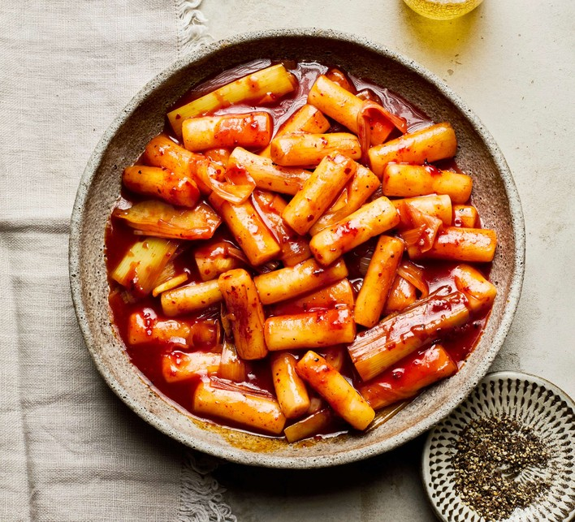
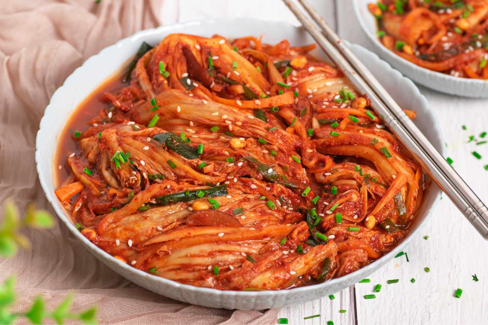
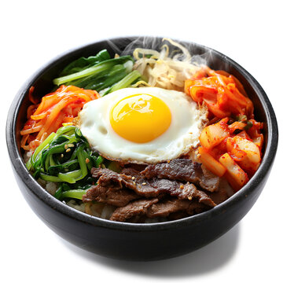

Un voyage culinaire au coeur de la corée.
Saveurs , couleur et traditions dans chaque plat
La cuisine coréenne
Une explosion de saveurs coréennes

Tteokbokki
Le tteokbokki est un plat de riz emblématique de Corée du Sud ,composé de cylindres de gâteau de riz gluant fondant, cuits dans une sauce onctueuses ,épicés et légèrement sucrée à base de pâte de piment.

Bulgogi
Le bulgogi est un plat de boeuf mariné, finement tranché et cuit à la poêle ou grillé. Mariné avec de la sauce soja, de l'ail, du sucre et du sésame ,le bilgpgi est tendre et juteux.

Kimchi
Le kimchi est l'accompagnement par excellence en Corée, et il existe de nombreuse variantes .Le plus connu est le kimchi de chou fermenté,assaisoné de piment, d'ail, et de gigembre . Sa saveurs unique ,légèrement piquante et acidulée ,en fait un élément indispensable de la table coréenne.

Bibimbap
Le bibimbap est un bol de riz garni de légumes variés , de viane, d'un oeuf ,et de pâte de piment. Chaque ingredient est soigneusement préparé et disposé autour pour creer un bol riche en texture et en saveurs.